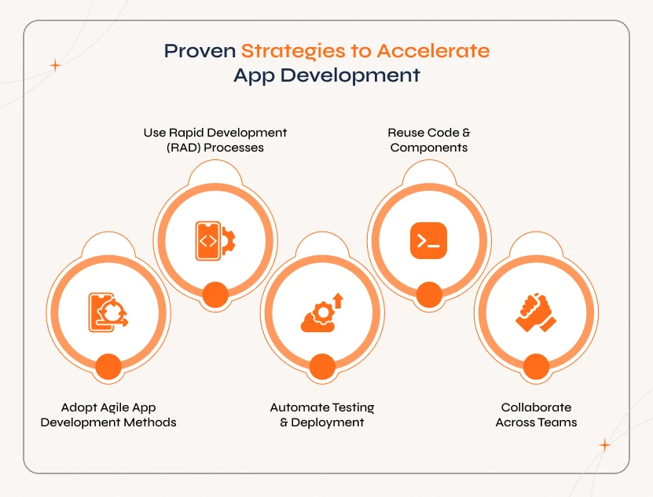
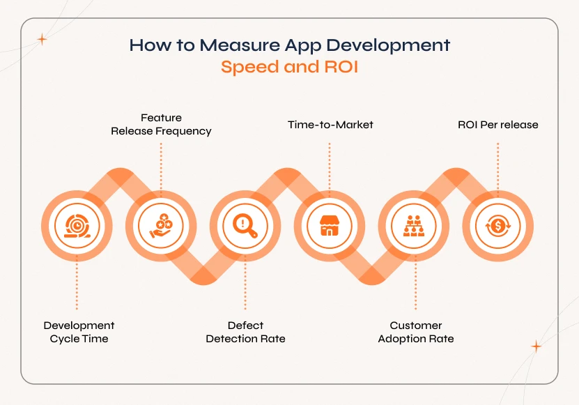
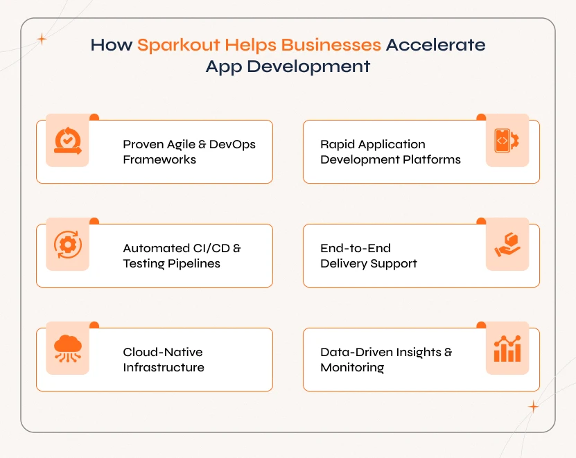

In today's fast-paced digital world, every business is looking to innovate faster. Those companies that accelerate app development achieve a faster time-to-market, improved ROI, stronger customer engagement, and gain a competitive edge.
However, the real challenge is not just building faster, but involves building smarter. With the right development strategy, agile processes, and modern tech stack, companies can deliver high-performing apps in a defined time without compromising user experience, security, and scalability.
Here in this guide, you will get to know the proven methods, tools, and best practices to help you streamline your app development process. With this, you can get faster time-to-market, maintain quality, and maximize the business impact.
Why Accelerating App Development Matters in Today’s Digital-First Economy
Accelerating app development is not just about writing code faster. Rather, it is about bringing ideas to market quickly while maintaining quality, flexibility, and innovation. In today's market, users are looking for a seamless digital experience and instant updates. With this, any minor app development delays can mean losing valuable opportunities and customer trust. Upon streamlining your app development lifecycle, you can
- Capture market opportunities early and stay ahead of emerging trends.
- Minimize development and maintenance costs via smarter workflows.
- Respond faster to user feedback and improve customer satisfaction.
- Stay ahead of competitors with shorter and more efficient release cycles.
Put together, when you accelerate app development with a strategic and agile approach, speed becomes the key to your business growth.
Common Challenges That Slow Down App Development
Not even experienced development teams are expectational from getting roadblocks that slow down the progress and delay app development as well as launch. These bottlenecks occur as a result of process inefficiencies, communication gaps, and technology limitations that impact the overall productivity. Understanding these common roadblocks helps businesses identify what is slowing them down and how to address them at the earliest.
The most common challenges businesses face include:
1. Unclear Project Requirements
When the objectives and
features are not clearly defined, it is obvious for the teams to face issues that
lead to rework and confusion.
2. Inefficient Sprint Planning
Poor scope identification and
unrealistic milestones will disrupt the timelines and create delivery bottlenecks.
3. Limited Automation
Without proper automation in testing,
integration, and deployment, manual tasks will extend the release cycle.
4. Outdated Technology Stack
Using those old frameworks or
libraries will limit the scalability, performance, and compatibility with modern
platforms.
5. Poor Communication Flow
Inefficient communication
between the developers, designers, and stakeholders will cause coordination delays
and missed deadlines.
In order to accelerate the app delivery, businesses should address these bottlenecks efficiently through agile processes, modern tools, and ensure stronger collaboration practices from the beginning.
Facing roadblocks in your development process?
Accelerate app development using proven frameworks & automation-driven approach while maintaining enterprise-grade quality and scalability.
Proven Strategies to Accelerate App Development
Leading organizations have a clear view that the key to accelerating app development lies in combining the right methodologies, tools, and teamwork. Upon carrying out the strategies below carefully, it is possible to speed up the app development process without compromising on the quality.

1. Adopt Agile App Development Methods
It involves breaking
projects into smaller, manageable sprints to provide continuous feedback, faster
iterations, and smoother delivery cycles.
2. Use Rapid Development (RAD) Processes
This speeds up
prototyping and MVP creation with the low-code or no-code platforms. This helps
teams quickly validate the ideas.
3. Automate Testing & Deployment
Upon implementing CI/CD
pipelines, it is possible to eliminate manual dependencies and accelerate release
cycles. This even ensures consistent quality across builds.
4. Reuse Code & Components
It is possible to save valuable
time by leveraging pre-built modules, SDKs, or APIs. This, in turn, ensures
efficiency and code reliability.
5. Collaborate Across Teams
In order to maintain alignment and
minimal rework, it is vital to foster strong cross-functional collaboration between
developers, designers, and QA teams to maintain alignment and minimize rework.
By following the above strategies, businesses can witness quick app delivery, improve efficiency, and maintain high standards of performance and user experience. With this, it is possible to achieve both speed and scalability in every release.
Technology Stack Choices That Help Businesses Accelerate App Development
The technology stack you choose directly impacts how quickly and efficiently your app can be built. A modern, flexible tech stack empowers teams to iterate faster, deliver seamless experiences across platforms. Using the right combination of tools, it is highly possible to accelerate app development, simplify workflows, and minimize bottlenecks.
Here are some of the most effective tech stack businesses can rely on for rapid, high-quality development:
1. Frontend - React, Flutter, Angular
- These tools enable fast, dynamic, and responsive user interfaces.
2. Backend - Node.js, Django, .NET Core
- The above tools support high performance, scalability, and quick API development.
3. Mobile - React Native, Swift, Kotlin
- They are ideal for cross-platform and native mobile app delivery.
4. Cloud - AWS, Azure, Firebase
- These tools help streamline deployment, hosting, and scalability with managed services.
5. Database - PostgreSQL, MongoDB, Firestore
- They offer flexibility and high-speed data management for modern applications.
Upon using the rapid application development tools, modern frameworks, and cloud-native solutions, teams can deliver robust apps at a faster rate. Above all, these tools reduce the complexity, higher efficiency, and consistent performance across the platforms.
Powerful Tools That Help You Accelerate Application Development
After the tech stack, it is vital to choose the right development tools to accelerate the app development process and meet the demand for quick app delivery. The latest rapid application development (RAD) platforms help teams to prototype, test, and deploy apps quickly than ever and without compromising on scalability or quality.
Check out some of the top tools driving speed and innovation:
1. OutSystems
It is a powerful low-code enterprise app
builder that supports security, scalability, and integration flexibility.
2. Mendix
This tool provides rapid delivery of
enterprise-grade applications with intuitive low-code workflows and cloud-native
deployment.
3. FlutterFlow
It is ideal for visually designing and
developing cross-platform mobile and web apps. The best part is that it requires
minimal coding effort.
4. GitHub Copilot
It enhances developer productivity by
providing AI-driven code suggestions while reducing manual effort and debugging
time.
5. AWS Amplify
This tool simplifies the backend setup,
hosting, and deployment for both web and mobile apps. This enables faster
go-to-market.
These are the best tools that help teams streamline development workflows, reduce time-to-market, and make app development a scalable and repeatable process. This, in turn, becomes a strategic advantage for the business looking to gain a competitive advantage.
How Effective Project Management Speeds Up App Development
In order to find out how efficiently your team delivers high-quality apps on time, it is vital to have effective project management. With the right structure, communication, and tools, teams can speed up app development. They help maintain the focus, reduce rework, and improve collaboration.
Agile methodologies and app lifecycle management platforms like Jira, Asana, Trello, etc., help teams attain:
- Transparent task tracking for improved accountability.
- Real-time progress visibility across the teams and stakeholders.
- Rapid iteration cycles via sprint-based execution.
- Reduced delivery bottlenecks with better workload management.
If your project roadmap is aligned with agile goals, your team can move faster, adapt quickly to changes, and ensure every release meets both timeline and quality expectations. Thus, efficient project management becomes the true accelerator of development speed.
Transform the way your teams deliver apps.
Find out how structured project management and agile approach help accelerate your app development.
How Does Building a High-Performance Team Accelerate App Development
Although technology is the solid foundation, it is your team's capability and collaboration that decide how fast and effectively those possibilities can be turned into a successful app.If you are an enterprise looking to speed up software development, then start by building a team that is skilled, agile, and focused on delivering real results.
An effective app development team should include the following:
- Cross-functional experts who get involved in design, development, and QA and ensure seamless coordination across the product lifecycle.
- A transparent communication culture that ensures the priorities are aligned and speeds up decision-making.
- Agile and DevOps practitioners who can automate the workflows and deliver continuous value through shorter release cycles.
- Cross-platform app development specialists who can check and ensure scalability and performance consistency across devices.
Thus, with experts, processes, and platforms put together, your organization can deliver apps faster and support scalability while maintaining enterprise-grade quality.
Best Practices to Maintain Speed and Quality in Balance
Not always, app development can be accelerated by paying more. It can be effectively achieved by allowing the team to balance fast delivery with long-term reliability. So, following the right practices will help you move faster while keeping your app stable, secure, and ready for the users.
Here are a few best practices to follow:
- Start by defining a clear MVP scope to focus on high-impact features first.
- Automate repetitive tasks early to eliminate the manual delays.
- By conducting regular code reviews, it is possible to maintain consistency and reduce bugs.
- Choose a continuous integration and testing approach for faster and safer deployments.
- Maintain the documentation alongside the development process to prevent knowledge gaps.
- Start collecting user feedback in every sprint and refine the product iteratively.
By integrating all these practices, teams can finish your app faster without compromising performance, user experience, and reliability. This, in turn, ensures speed and quality simultaneously.
How to Ensure Quality While Accelerating App Development
As development cycles speed up, quality assurance must evolve in parallelly. Speed matters only when your app stays stable, secure, and easy to use. For this reason, integrating QA from the beginning is essential to maintain not just the performance but also the reliability.
Things to ensure quality while keeping development fast:
- To detect issues early, it is better to implement automated unit and regression testing at an early stage.
- By using performance monitoring tools, it is easy to track the stability and optimize speed.
- It is possible to deliver a smooth user experience even before launch by focusing on usability testing.
- For continuous quality checks, it is better to integrate QA early into the CI/CD pipeline.
By maintaining a continuous feedback loop between the development and QA, teams can focus on accelerating app development without creating technical debt or compromising user satisfaction.
Want to Wrap Up App Development Quickly?
We help you set up robust QA workflows to detect issues early and keep your product release-ready at all times.
How to Measure App Development Speed and ROI
Accelerating app development is not just about speeding up time-to-market, but is about ensuring every sprint, release, and update drives measurable business value. By tracking the right performance metrics, enterprises can assess both development efficiency and return on investment (ROI) in the entire lifecycle.
Key metrics to monitor include:

1. Development Cycle Time
It is used to measure how long
it takes to move from concept to release. Leading teams aim to reduce cycle time by
30–40% using agile and automation.
2. Feature Release Frequency
This is used to track how
often new updates or features reach users. Top-performing companies push updates
2–3x faster with continuous delivery pipelines.
3. Defect Detection Rate
It is used to evaluate QA
effectiveness and code quality over time. Automated testing improves defect
detection by up to 60%, reducing rework and overall app development cost.
4. Time-to-Market
This indicates how quickly the business
can respond to new opportunities. For instance, accelerating releases by 20% can
deliver a significant advantage.
5. Customer Adoption Rate
It reflects user engagement and
satisfaction post-launch. Those projects with faster and higher-quality releases see
higher engagement and retention.
6. ROI Per release
This metric reveals the financial
impact and profitability of each version deployed. Enterprises using modern app
frameworks and CI/CD pipelines get 25% higher ROI through reduced maintenance and
faster monetization.
All of these KPIs provide a clear view of how effectively your organization can speed up software development while maintaining profitability, performance, and long-term growth.
How Sparkout Helps Businesses Accelerate App Development
At Sparkout, we help enterprises to faster app development process without compromising on the quality or scalability. Hire app developers from us who leverage the right mix of frameworks, automation, and delivery expertise to reduce development cycles and thereby achieve faster availability on the market.

We leverage:
1. Proven Agile & DevOps Frameworks
Our team uses agile
methodologies with DevOps automation to ensure faster iteration. This, in turn,
reduces downtime and offers smooth collaboration between development and operations.
With this approach, we provide continuous delivery without compromising on the
product stability.
2. Rapid Application Development (RAD) Platforms
We use
low-code and modular development environments to speed up prototyping, build MVPs
faster, and adapt faster to evolving business needs. This minimizes the rework and
accelerates time-to-market
3. Automated CI/CD & Testing Pipelines
From automated builds
to continuous testing, our pipelines ensure code reliability, faster deployment, and
consistent quality checks for every release cycle.
4. End-to-End Delivery Support
Our team at Sparkout manages
every phase of the development cycle from ideation to architecture design,
deployment, and maintenance. This way, we ensure agility, transparency, and
performance at every stage.
5. Cloud-Native Infrastructure
Hire app developers from
Sparkout and leverage scalable cloud solutions that enhance performance, support
faster deployment, and reduce infrastructure costs.
6. Data-Driven Insights & Monitoring
We continuously track
performance metrics, user analytics, and operational efficiency in order to optimize
each development sprint and deliver measurable ROI.
By integrating all these practices, Sparkout helps organizations to deliver applications faster, maintain top-tier performance, and ensure long-term scalability. We follow an agile approach that transforms app development into a predictable process that drives measurable business outcomes.
Why Businesses Trust Sparkout to Accelerate App Development Success
Partnering with the right development team helps determine how fast and efficiently your app reaches the market. At Sparkout, we combine proven delivery experience, agile execution, and transparent communication to help turn your vision into reality faster.
Our experience in cross-platform app development and enterprise-grade delivery ensures scalability, performance, and consistency across devices. Our dedicated teams manage the complete app lifecycle and thus ensure to deliver accountability and progress at every stage.
Through agile communication, optimized resource allocation, and a security-first approach, we help businesses launch high-quality apps on time without compromising user experience.
Ready to accelerate your app development journey?
Partner with Sparkout for faster app delivery, agile execution, and secure, scalable solutions.
Conclusion
Accelerating app development is all about working with the right tools, team, and process. Thus, it is not about rushing the app launch. By adopting agile methods, automation, and proven frameworks, businesses can achieve rapid app development process and gain measurable success.